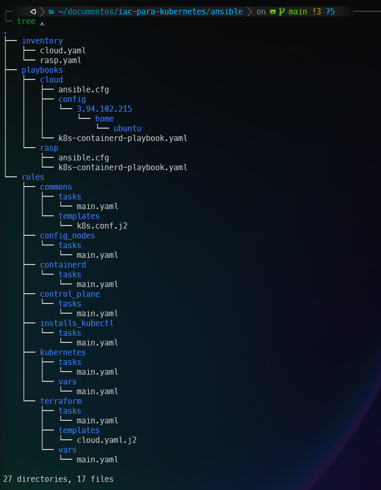

Ansible
O que é
Software de código aberto, escrito na linguagem Python, criado por Michael DeHaan e vendido à Red Hat em 2015.
Atualmente existem as versões Communit Ansible e Red Hat Ansible Automation Platform
Onde usar
Seja em máquinas virtuais, máquians físicas, provedores de nuvem, etc.
Onde se deseja:
- Configurar
- Orquestrar
- Provisionar
Como é aplicado
- É executado a partir do seu binário em linha de comando
- Utiliza comandos ad hoc e arquivos de manifesto que descrevem o que deve ser feito
Estrutura
-
Composto de módulos que podem fazer uma execução local ou remota
-
Manifestos escritos em yaml
Exemplo da estrutura

Vars
Contem variáveis, que pode ser utilizadas nomódulo em que foi declarada
Ex.:
Inventory
Descreve as máquinas que farão parte do projeto
Essas máquinas podem ser agrupadas de acordo com suas características, à escolha do desenvolvedor
Ex.:
all:
children:
localhost:
kubernetes:
children:
control_plane:
hosts:
# control_plane_ips
3.94.102.215:
nodes:
hosts:
# node_ips
54.198.221.11:
52.90.225.205:
Roles
Contem todas as fazes de instalações e configurações
---
- name: Update apt && upgrade apt
apt:
upgrade: "dist"
update_cache: true
force_apt_get: true
state: "latest"
force: true
- name: Instalando pacotes comuns
apt:
state: present
name: "{{ packages }}"
vars:
packages:
- curl
- wget
- apt-transport-https
- ca-certificates
- gnupg
- lsb-release
- python3.10
- name: modprobe overlay
modprobe:
name: overlay
state: present
- name: modprobe br_netfilter
modprobe:
name: br_netfilter
state: present
- name: Inserindo template k8s.conf
template:
src: k8s.conf.j2
dest: /etc/sysctl.d/k8s.conf
mode: 0644
- name: "sysctl"
shell: "sysctl --system"
Playbooks
Associa de forma ordenada as tasks que devem ser executadas com cada grupo de hosts.
Ex.:
- hosts: localhost
gather_facts: false
roles:
- { role: terraform }
- hosts: kubernetes
gather_facts: false
remote_user: ubuntu
become: yes
become_user: root
roles:
- { role: commons }
- { role: kubernetes }
- { role: containerd }
- hosts: control_plane
gather_facts: false
remote_user: ubuntu
become: yes
become_user: root
roles:
- { role: control_plane }
- hosts: nodes
gather_facts: false
remote_user: ubuntu
become: yes
become_user: root
roles:
- { role: config_nodes }
- hosts: control_plane
gather_facts: false
remote_user: ubuntu
become: no
roles:
- { role: installs_kubectl }
Uma Vantagem Muito Específica
Não é necessário a instalação de um client nas máquinas que serão configuradas por ele, pois se comunica por protocolo SSH